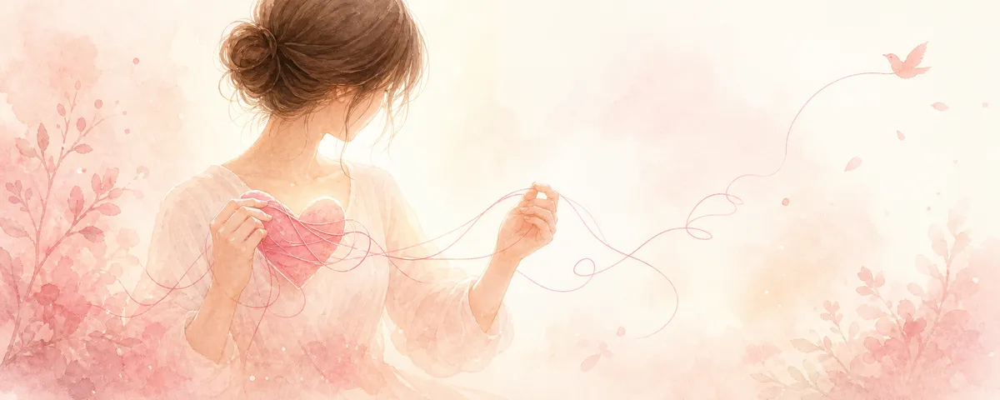

恋愛に依存してしまう・「重い」と言われるあなたへ

相手の連絡が来ないと何も手につかない。既読がつかないだけで頭が真っ白になる。「重い」と言われて落ち込む——。そんな自分がつらいなら、責めるのではなく、少し楽になる方向を一緒に探しましょう。
「依存的になる」のは、弱さでも病気の決めつけでもない
まず大切なこと。相手に強く気持ちが向くのは、あなたが愛情深い証でもあります。「自分は恋愛依存だ」と決めつけてさらに自分を責める必要はありません。ここでは病名をつけるのではなく、「いまの苦しさを、どうすれば少し軽くできるか」を考えます。
不安が大きくなる「思考のクセ」に気づく
連絡が来ないと「嫌われた」「捨てられる」と最悪を想像してしまう——これは事実ではなく、不安が作り出した解釈です。「返信がない」（事実）と「嫌われた」（解釈）を切り分けるだけで、波に飲まれにくくなります。不安なときほど、いったん「これは事実？それとも私の想像？」と問い直してみましょう。
気持ちの置き場を、相手以外にも作る
つらさの逃げ場が「相手の反応」だけだと、相手の一挙一動に振り回されます。相手にぶつける前に、不安を受けとめる別の場所——信頼できる人、書き出すこと、好きなことに没頭する時間、相談——を持つことが、依存的な苦しさをやわらげます。連絡を我慢する根性ではなく、「気持ちの逃がし方を増やす」発想です。
「自分の世界」を少しずつ取り戻す
恋愛で頭がいっぱいになると、自分の生活や楽しみが縮んでいきます。仕事、趣味、友人、休息——相手とは関係のない「自分の時間」を少しずつ取り戻すと、相手への比重が自然に下がります。相手を減らすのではなく、自分を増やすイメージです。
「重い」と言われたときの受けとめ方
「重い」という言葉はぐさりと刺さりますが、それはあなたの価値の否定ではありません。多くの場合、相手は「ペースを合わせたい」というサインを出しているだけです。落ち込みすぎず、「どんな関わり方なら、お互いが心地よいか」を一緒に探す視点に切り替えると、関係も自分も楽になります。
つらさが強すぎるときは
眠れない・食べられない・消えてしまいたいと感じる——そんなときは、恋愛相談の範囲を超えています。ひとりで抱えず、医療機関やこころの相談窓口（厚労省「まもろうよ こころ」など）を頼ってください。あなたの安全がいちばん大切です。
「分かっているのに、やめられない」——その気持ちごと、受けとめます。
責めずに、少し楽になる関わり方を一緒に見つけましょう。
※本記事は一般的な情報提供です。医療的な診断・治療は行いません。心身のつらさが強いときは、専門の相談窓口・医療機関のご利用をおすすめします。
← トップへ戻る